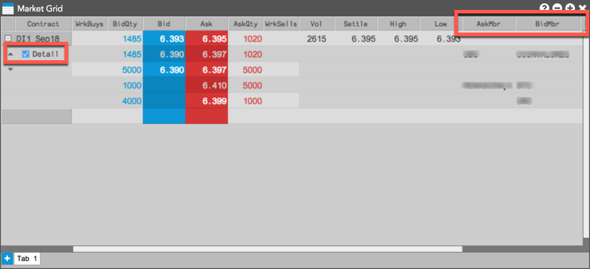
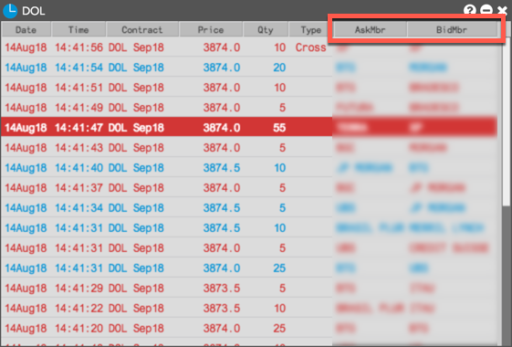
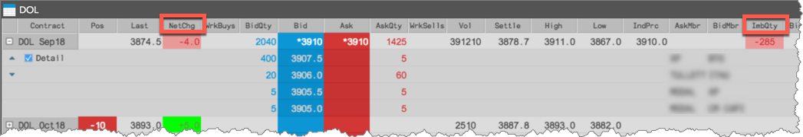
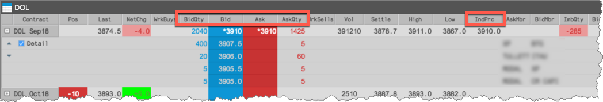
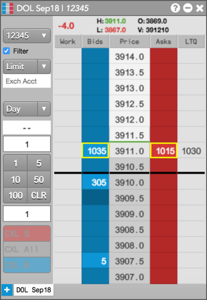
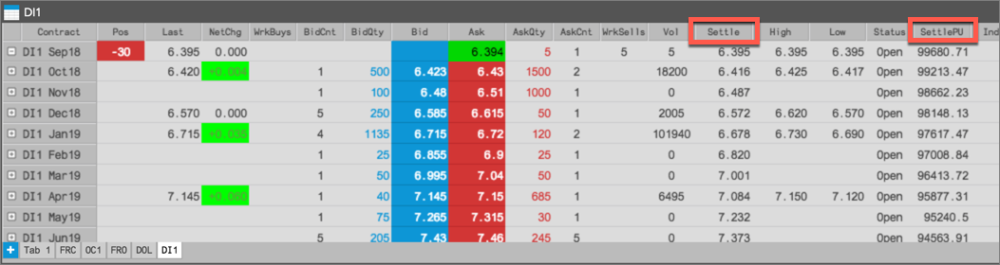
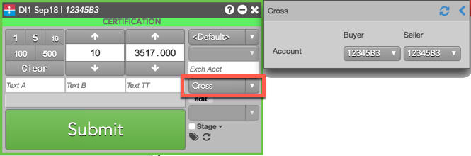
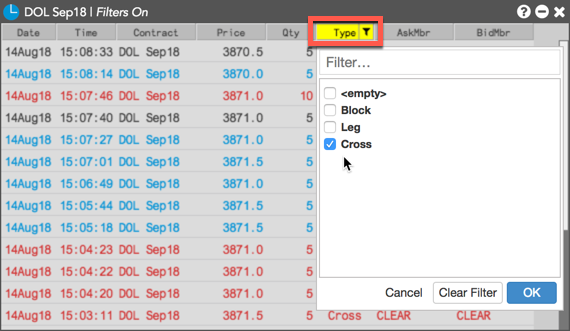
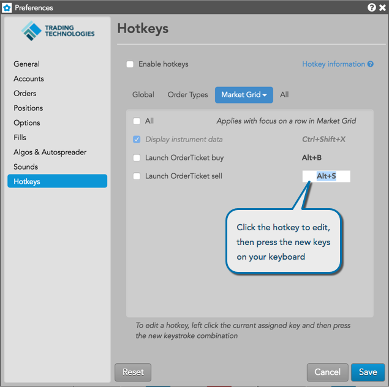

The B3 exchange, formerly BVMF, was established in 2008 by a merger between the São Paulo Stock Exchange and Brazilian Mercantile & Futures Exchange. B3 is located in São Paulo, Brazil and offers you access to trading stocks, currencies, commodities, and futures on one exchange.
To support trading on B3, TT provides the following:
TT displays the counterparty code or name in the AskMbr and BidMbr columns in the Market Grid, Depth, and Time & Sales widgets.
In Market Grid, the counterparty code or name is displayed for detailed depth only. No counterparty information is displayed for aggregate depth. To display detailed depth, expand the contract row and check the Detail checkbox.

When you open or launch a linked Depth widget for a B3 instrument in Market Grid, counterparty information is displayed in the BidMbr and AskMbr columns.
In Time and Sales, the counterparty code is displayed in the AskMbr and BidMbr columns for completed trades.

Auctions are used in the B3 market for determining the market price of a contract by accepting bids and offers for a specified time period without matching. BVMF auction states are either scheduled (e.g., Pre-Open market state) or triggered per product or market condition during continuous trading (i.e., intra-day auction).
Buy/Sell quantity imbalances during Auction states are displayed in the ImbQty column in Market Grid. The imbalance quantity is the difference between the Bids and Asks at a given price in the market, allowing you to determine if there are more buyers than sellers or more sellers than buyers at each price for a given contract.
A positive value indicates more quantity on the bid than the offer, and a negative value indicates more quantity on the offer than the bid. Both quantities are highlighted using the Net Change Up/Net Change Down color settings.

Quantities of resting Buy/Sell "On Auction" and "On Close" orders during Auction states are displayed in the BidMktQty and AskMktQty columns in Market Grid. The Bid market quantity (BidMktQty) column displays the total quantity of resting Buy Market orders, and the Ask market quantity (AskMktQty) column displays the total quantity of resting Sell Market orders.
In Market Grid, accumulated quantities at the indicative price are displayed for Bid and Ask during Auction states. The quantities are displayed in the BidQty and AskQty columns, and the indicative price is displayed in the IndPrc column. Net change and P/L calculations are updated based on the indicative price when it's available.

In MD Trader, the appropriate price column highlights the indicative price during the Auction and Pre-Open periods.

The “On Auction” and “On Close” time-in-force (TIF) order restrictions for Market orders are supported for equity products. You can submit Market On Auction and Market On Close orders using the Order Ticket from Market Grid.
Market On Auction orders can be submitted during Auction states only. Market On Close orders can be submitted during continuous trading, but do not work in the market until the Closing Auction begins. When an auction expires, the unfilled quantity of the order is deleted at the exchange.
The Market Grid shows the settle price unit in the SettlePU column, which is a converted form of the settlement price.

The DI instrument price is an annualized interest rate for interbank deposits. Each rate has a corresponding unitary price (PU), which is the final value discounted by the interest rate adjusted by the number of workdays to expire. At the end of each session, the exchange releases the settle denominated in interest rate and its corresponding settle in unitary price, which is displayed in the SettlePU column. P/L for the DI1 interest rate product is calculated using unitary prices.
To submit a two-sided Cross for a B3 instrument, open an Order Ticket in the Market Grid and select Cross from order type selector to open the Cross flyout panel. In the panel, select an account for both sides of the Cross trade, set the price and quantity, and click Submit.

To filter the Type column for Cross trades in Time & Sales, click the drop-down arrow and select Cross.

Hotkeys are available to launch an Order Ticket from Market Grid as a Buy ticket (Alt+B) or a Sell ticket (Alt+S). When the Order Ticket is open, pressing the "Enter" key will submit the order and "Esc" will close the ticket.
The hotkey defaults can be customized in your workspace preferences. To edit the order entry hotkeys, click Preferences from the workspace menu bar, then click | Hotkeys | Widgets | Market Grid.
